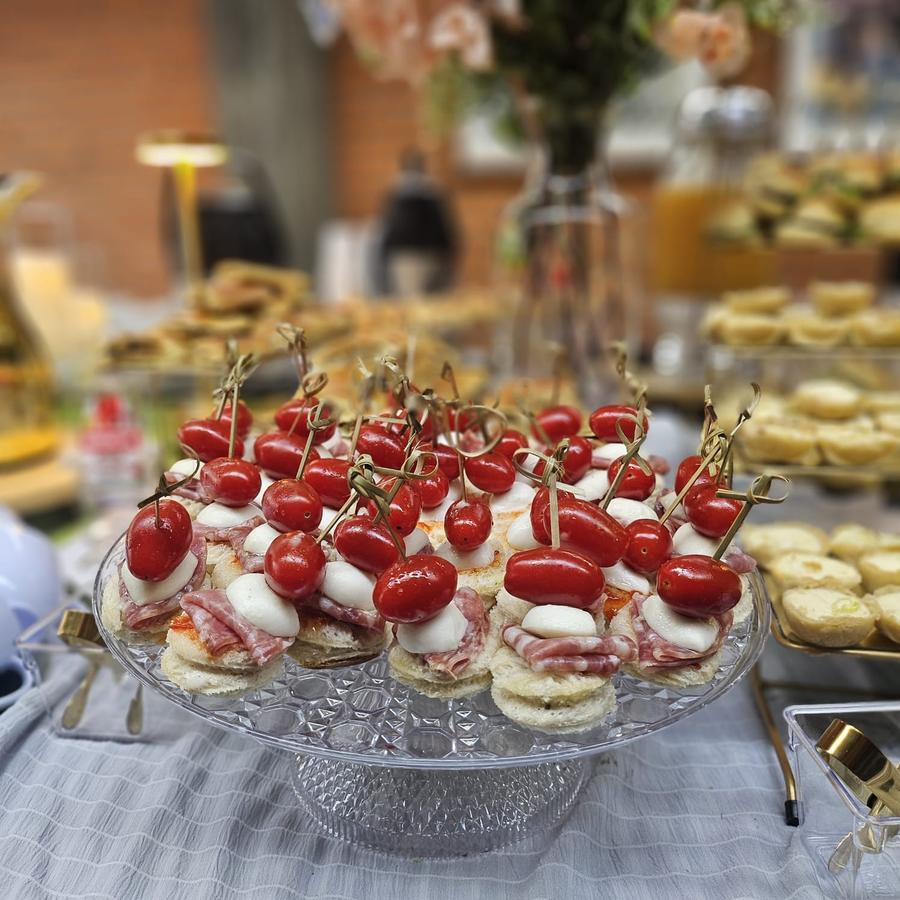
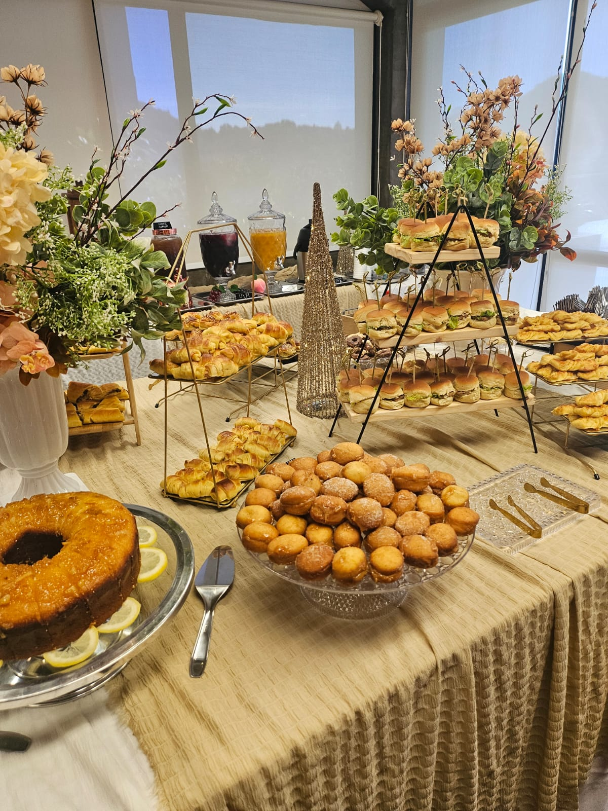

Um coffee break de inauguração é a primeira impressão concreta que sua marca deixa nos convidados — clientes, parceiros, imprensa e equipe. Seja na abertura de uma loja em Ipanema, no novo escritório na Barra da Tijuca ou no lançamento de um produto no Centro do Rio, o que as pessoas comem, bebem e fotografam naqueles primeiros minutos diz muito sobre o cuidado da empresa. Neste guia, mostramos como usar o coffee break para valorizar a marca, organizar o fluxo de convidados em pé e gerar registros que ajudam na divulgação.
Por que o coffee break define a primeira impressão
Inaugurações e lançamentos são eventos de imagem. Diferente de uma reunião interna, o objetivo aqui é encantar quem está conhecendo a marca pela primeira vez — e quase sempre há câmeras de celular ligadas, stories sendo gravados e, em muitos casos, imprensa setorial presente.
Nesse contexto, a mesa de coffee break funciona como um cartão de visitas comestível. Uma apresentação caprichada comunica padrão e atenção ao detalhe antes mesmo do discurso de abertura. Uma mesa improvisada ou mal abastecida transmite o oposto, justamente no momento em que a marca mais quer impressionar.
- Boas-vindas: recebe os convidados com algo agradável enquanto o espaço enche e o evento começa.
- Conversa: dá um motivo para as pessoas circularem, se aproximarem e iniciarem networking.
- Tempo: mantém os convidados confortáveis durante esperas, discursos e visitas guiadas ao espaço.
Finger food: o formato certo para eventos em pé
Inaugurações e lançamentos raramente têm cadeiras e mesas para todos. As pessoas circulam, conversam em grupos e visitam o espaço de mão livre. Por isso, o cardápio ideal é construído em torno de finger food — itens de uma ou duas mordidas, que se comem em pé, sem talher e sem bagunça.
O que funciona bem em pé
- Canapés e mini salgados: práticos de pegar e elegantes na apresentação.
- Espetinhos e brochetes: frutas, queijos ou tomate-cereja com muçarela, fáceis de segurar.
- Mini doces e docinhos finos: porções individuais que não sujam as mãos.
- Pães e folhados em porções pequenas: sabor sem exigir prato e faca.
- Bebidas em copos próprios para circulação: café, sucos e água de fácil acesso em estações.
A regra de ouro é evitar pratos que exijam o convidado parar, sentar e usar talheres. Quanto mais simples for comer de pé, mais as pessoas circulam — e mais a inauguração ganha em clima e networking.

Personalização com a identidade visual da marca
O grande diferencial de um coffee break de inauguração ou lançamento é a oportunidade de transformar a mesa em uma extensão da marca. Quando a apresentação conversa com a identidade visual do evento, cada foto tirada pelos convidados vira divulgação espontânea.
Como aplicar a marca na mesa
- Cores: guardanapos, toalhas, suportes e flores escolhidos na paleta da empresa.
- Etiquetas e plaquinhas: identificação dos itens com a tipografia e o logotipo da marca.
- Tema do produto: em lançamentos, sabores e cores podem dialogar com o produto que está sendo apresentado.
- Disposição: a peça central da mesa pode destacar o produto, o nome da loja ou a data da inauguração.
Na Coffee Trip, o cardápio e a montagem são personalizados de acordo com o briefing do evento. Trabalhamos com diferentes níveis de cardápio — do mais enxuto ao mais elaborado — para que a mesa esteja alinhada à proposta da inauguração e ao público esperado.

Timing e fluxo de convidados
Inaugurações têm um detalhe que reuniões não têm: as pessoas chegam de forma escalonada, em horários diferentes. Por isso o planejamento de timing e fluxo é decisivo para que ninguém encontre a mesa vazia ou enfrente filas.
Pontos de atenção no planejamento
- Montagem antecipada: a mesa precisa estar 100% pronta antes da chegada do primeiro convidado.
- Reposição contínua: em eventos longos, os itens mais consumidos são reabastecidos ao longo do tempo.
- Mais de um ponto de serviço: em espaços maiores, estações distribuídas evitam aglomeração em um único canto.
- Espaço de circulação: a disposição deve permitir que os convidados peguem o que querem sem travar a passagem.
Para inaugurações com público chegando aos poucos ao longo de algumas horas, o ideal é alinhar com antecedência o horário de pico esperado e a duração do evento, para dimensionar quantidades e reposição de forma correta.
Como o registro do evento ajuda na divulgação
Um dos maiores valores de uma inauguração ou lançamento é o conteúdo que ele gera. Fotos da mesa, dos detalhes e do clima do evento abastecem as redes sociais da empresa, releases para a imprensa e materiais de relacionamento por semanas depois.
Por isso, vale planejar a mesa pensando também na câmera: composição caprichada, ângulos limpos e os elementos da marca visíveis. Quanto mais bonita e coerente a montagem, melhor o material gerado — tanto pelos próprios convidados quanto por um registro profissional.
A Coffee Trip oferece fotografia profissional como serviço opcional, contratado à parte, para quem quer registros de alta qualidade da mesa e da experiência. É uma escolha do cliente, ideal para inaugurações e lançamentos que vão alimentar a comunicação da marca. (Não trabalhamos com filmagem.)

O que influencia o planejamento (e o orçamento)
Cada inauguração é única, e o orçamento é sempre personalizado — feito diretamente pelo WhatsApp, após entendermos o evento. Alguns fatores que influenciam a proposta:
- Número de convidados e fluxo esperado ao longo do evento.
- Nível de cardápio escolhido, do mais enxuto ao mais elaborado.
- Grau de personalização com a identidade visual da marca.
- Local e logística de acesso, montagem e desmontagem.
- Duração do evento e necessidade de reposição.
- Serviços opcionais, como a fotografia profissional contratada à parte.
Em todo o Rio de Janeiro, cuidamos do processo completo: cardápio personalizado, montagem e desmontagem, louças e utensílios inclusos e pontualidade para que tudo esteja pronto antes do primeiro convidado chegar.
Vai inaugurar ou lançar algo no Rio?
Atendemos empresas em todo o Rio de Janeiro. Conte sobre a sua inauguração ou lançamento e receba uma proposta personalizada.
Solicitar orçamento pelo WhatsApp